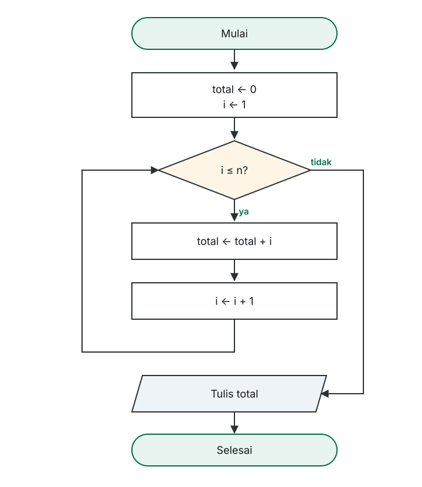

Universitas Ahmad Dahlan Aceh · Fakultas Sains dan Teknologi
Algoritma dan Pemrograman I · INFUAD-003 · 2 SKS · Program Studi Informatika (S1)
Pekan 10
Bagian 01
Satu instruksi yang dikerjakan seratus kali, bukan seratus instruksi.
Menghitung 1 sampai 100
Bagian keempat paling sering terlupakan — akibatnya pengulangan tidak pernah berhenti.
Bagian 02
Kondisi diperiksa di awal, sebelum badan pengulangan.
Bentuknya
WHILE kondisi DO aksi ENDWHILE
Kondisi diperiksa → kalau benar, aksi dikerjakan → kembali memeriksa kondisi. Kalau salah, pengulangan berakhir.
Sifat penting
Badan WHILE bisa tidak pernah dijalankan.
Karena kondisi diperiksa lebih dulu, jika kondisinya sudah salah sejak awal, seluruh badan pengulangan langsung dilewati.
Pola paling sering
DEKLARASI i : integer BEGIN i ← 1 WHILE i ≤ 5 DO WRITE i i ← i + 1 ENDWHILE END
Nilai awal di luar, perubahan di dalam. i ← i + 1 berarti: ambil isi i, tambah satu, simpan kembali.
Bentuknya dalam diagram

Kalau perubahan hilang
Pengulangan tak berujung.
Tanpa i ← i + 1, i selalu 1, kondisinya selalu benar, dan program mencetak angka yang sama tanpa henti. Ini kesalahan yang harus selalu diantisipasi.
Bagian 03
Ketika jumlah putarannya sudah pasti — dan ketika kondisi diperiksa di akhir.
Jumlah pasti
FOR i ← 1 TO n DO aksi ENDFOR
Nilai awal, kondisi, dan perubahan sudah tersusun otomatis. i naik dari 1 sampai n, lalu berhenti sendiri.
Memilih yang tepat
| WHILE | FOR | |
|---|---|---|
| Jumlah putaran | belum tentu diketahui | sudah pasti |
| Perubahan pencacah | ditulis sendiri | otomatis |
| Kondisi | ditulis sendiri | tersirat dari batas |
Memakai WHILE untuk “selama pengguna belum selesai”; memakai FOR untuk “12 bulan”.
Kondisi di akhir
REPEAT aksi UNTIL kondisi
Karena kondisi diperiksa paling akhir, badan REPEAT pasti dijalankan minimal satu kali. Cocok untuk meminta masukan sampai nilainya benar.
Bagian 04
Menjumlahkan dan menghitung banyak nilai sekaligus.
Polanya
total ← 0 WHILE belum_selesai DO tambahkan sesuatu ke total ENDWHILE
Siapkan wadah sebelum pengulangan, lalu tambahkan sesuatu ke dalamnya pada setiap putaran.
Yang mudah keliru
Pola yang sama juga bekerja untuk pencacah kejadian: mulai dari 0, tambah satu setiap kali syarat terpenuhi.
Bagian 05
Dari pencacah sampai faktorial.
Contoh 1
DEKLARASI n, i : integer total : integer BEGIN READ n total ← 0 i ← 1 WHILE i ≤ n DO total ← total + i i ← i + 1 ENDWHILE WRITE total END
Masukan n = 5 menghasilkan total = 15.
Contoh 2 — versi FOR
DEKLARASI n, i : integer BEGIN READ n FOR i ← 1 TO n DO WRITE i ENDFOR END
Bandingkan dengan versi WHILE: di sini tidak ada nilai awal maupun perubahan yang ditulis manual.
Contoh 3
DEKLARASI n, i : integer nilai : integer total : integer rata_rata : real BEGIN READ n total ← 0 FOR i ← 1 TO n DO READ nilai total ← total + nilai ENDFOR rata_rata ← total ÷ n WRITE rata_rata END
READ nilai berada di dalam pengulangan — nilai baru dibaca setiap putaran.
Contoh 4 — akumulator perkalian
DEKLARASI n, i : integer hasil : integer BEGIN READ n hasil ← 1 FOR i ← 1 TO n DO hasil ← hasil × i ENDFOR WRITE hasil END
hasil dimulai dari 1, bukan 0. Dengan n = 5, hasilnya 120.
Menelusuri pengulangan
| Putaran | i sebelum cek | i ≤ 5 | total sesudah | i sesudah |
|---|---|---|---|---|
| 1 | 1 | benar | 1 | 2 |
| 2 | 2 | benar | 3 | 3 |
| 3 | 3 | benar | 6 | 4 |
| 4 | 4 | benar | 10 | 5 |
| 5 | 5 | benar | 15 | 6 |
| — | 6 | salah | berhenti | |
Jebakan paling halus
Berjalan 5 kali atau 6 kali?
Apakah nilai akhirnya 15 atau 21 hanya terlihat jelas pada tabel penelusuran. Perhatikan padanan batas: i < n berjalan n − 1 kali, sedangkan i ≤ n berjalan n kali.
Hindari
Selanjutnya
Tanpa jawaban benar atau salah
Dua soal lagi tersedia di catatan kuliah.
Terima kasih
Kuasa pengulangan datang dari perubahan yang konsisten — tanpa itu, ia tidak pernah berhenti.